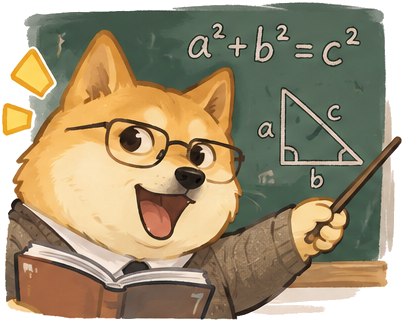
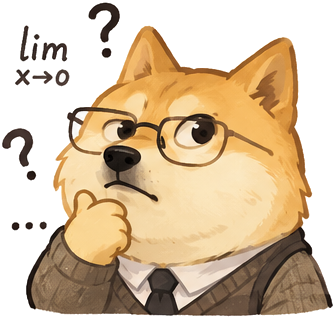
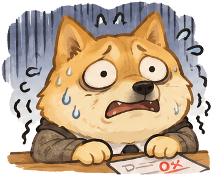
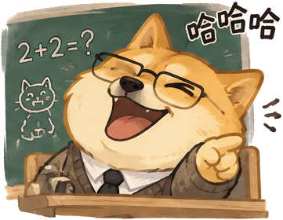
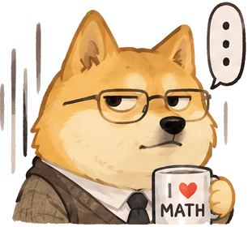
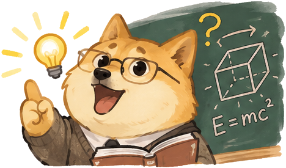

默认头像
01_default
PNG · SVG10 个表情 + 主形象。SVG 内嵌透明 PNG，保留原画风格，不是矢量路径。
01_default
PNG · SVG
02_explaining
PNG · SVG
03_thinking
PNG · SVG04_confused
PNG · SVG05_angry
PNG · SVG
06_anxious
PNG · SVG
07_teasing
PNG · SVG
08_speechless
PNG · SVG09_praising
PNG · SVG
10_inspired
PNG · SVG
main
PNG · SVG